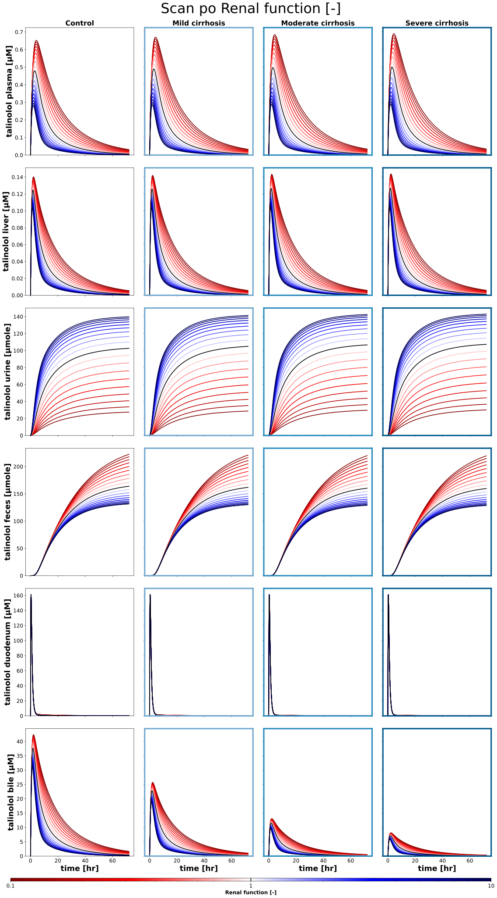
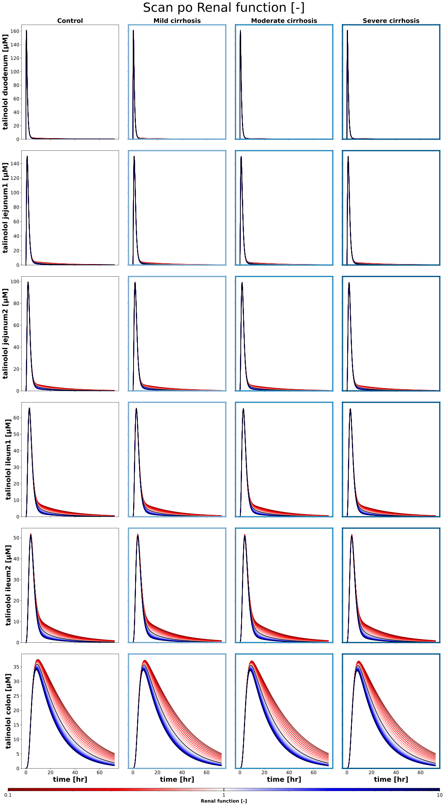
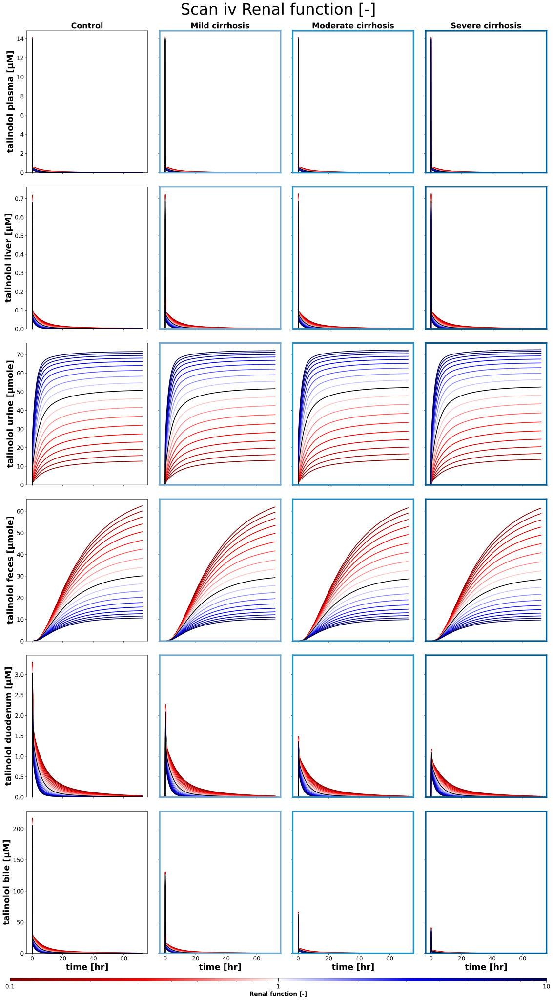
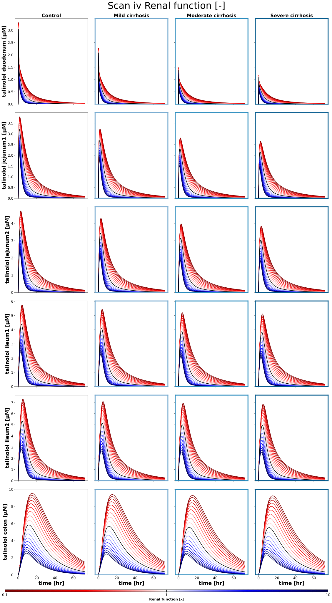
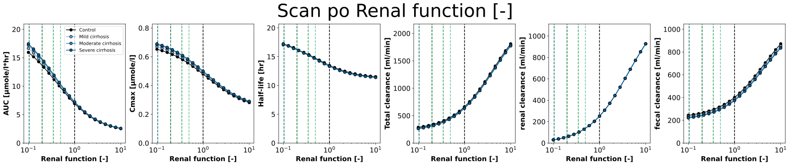
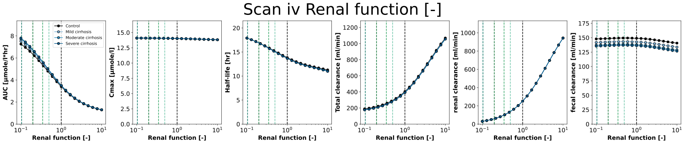

Overview
Models
| model | source |
|---|---|
| model | talinolol_body_flat.xml |
Datasets
The experiment has no datasets.
Figures (6)












Code
"""Scans of the activity of the transporters and of the renal function in liver cirrhosis.
Every scan varies one factor of the model logarithmically from 0.1 to 10 (1 is
the reference) after a single oral dose of 100 mg and a single intravenous
dose of 30 mg talinolol, for every degree of cirrhosis of `cirrhosis_map`:
the intestinal P-glycoprotein (`PGFunctionScan`), the hepatic OATP1B1
(`OATP1B1FunctionScan`), the intestinal OATP2B1 (`OATP2B1FunctionScan`) and
the renal function (`RenalFunctionScan`). The figures show the timecourses
and the pharmacokinetic parameters (`talinolol_pk`) over the scanned factor.
"""
from typing import ClassVar, TypedDict, override
import matplotlib
import matplotlib.pyplot as plt
import numpy as np
import pandas as pd
from matplotlib.axes import Axes
from matplotlib.cm import ScalarMappable
from matplotlib.colors import LogNorm
from sbmlsim import Q
from sbmlsim.plot.serialization_matplotlib import FigureMPL
from sbmlsim.simulation import Dimension, Scan, Simulation
from pkdb_models.models.talinolol import MODEL
from pkdb_models.models.talinolol.experiments.base_experiment import (
TalinololSimulationExperiment,
)
class ScanSpec(TypedDict):
"""Definition of a single parameter scan."""
parameter: str
range: np.ndarray
units: str
label: str
def _activity_range(num: int = 19) -> np.ndarray:
"""Get the values of a scan from 0.1 to 10 (logarithmic) with the reference 1."""
return np.unique(np.append(np.logspace(-1, 1, num=num), [1.0]))
class FunctionScan(TalinololSimulationExperiment):
"""Scan the effect of a factor of the model on the pharmacokinetics of talinolol.
The base of the scans of this module, a scan defines `scan_map` with the
one scanned factor. A factor below 1 is red, above 1 blue and the
reference (1) black; the frame of a panel has the color of the degree of
cirrhosis.
"""
#: the scanned factor, one entry
scan_map: ClassVar[dict[str, ScanSpec]] = {}
#: the doses of the routes [mg]
doses: ClassVar[dict[str, tuple[str, float]]] = {
"po": ("PODOSE_tal", 100.0),
"iv": ("IVDOSE_tal", 30.0),
}
#: the end of the simulations [hr], five half-lives (13.7 hr) after the
#: dose, for the terminal phase of the pharmacokinetic parameters
tend = 72
#: the variables of the timecourses: plasma, liver, excretion and the
#: lumen of the intestine
sids_all: ClassVar[tuple[str, ...]] = (
"[Cve_tal]",
"[LI__tal]",
"Aurine_tal",
"Afeces_tal",
"[Cduodenum_tal]",
"LI__Cbile_tal",
)
sids_intestine: ClassVar[tuple[str, ...]] = (
"[Cduodenum_tal]",
"[GU__tal_jejunum_1]",
"[GU__tal_jejunum_2]",
"[GU__tal_ileum_1]",
"[GU__tal_ileum_2]",
"[GU__tal_colon]",
)
#: the pharmacokinetic parameters of the figures, the apparent clearance
#: after an oral dose (`pk_id`)
pk_parameters: ClassVar[tuple[str, ...]] = (
"auc_inf_obs",
"cmax",
"thalf",
"cl",
"cl_renal",
"cl_fecal",
)
def _key(self, route: str, cirrhosis_key: str) -> str:
"""Get the key of the simulation of a route and a degree of cirrhosis."""
(scan_key,) = self.scan_map
return self.to_sid(f"scan_{route}_{scan_key}_{cirrhosis_key}")
@override
def simulations(self) -> dict[str, Scan]:
(scan_data,) = self.scan_map.values()
scans = {}
for route, (dose_id, dose) in self.doses.items():
for cirrhosis_key, cirrhosis in self.cirrhosis_map.items():
scans[self._key(route, cirrhosis_key)] = Scan(
simulation=Simulation(
time_unit="hr",
end=self.tend,
preinit_changes={
**self.default_changes(),
dose_id: Q(dose, "mg"),
"f_cirrhosis": Q(cirrhosis, "dimensionless"),
},
),
dimensions=[
Dimension(
"dim_scan",
values={
scan_data["parameter"]: Q(
scan_data["range"], scan_data["units"]
)
},
),
],
)
return scans
@override
def figures_mpl(self) -> dict[str, FigureMPL]:
return {
**self.figures_mpl_timecourses(),
**self.figures_mpl_pharmacokinetics(),
}
@staticmethod
def _color(value: float) -> str | tuple[float, float, float, float]:
"""Get the color of a value of the factor: < 1 red, 1 black, > 1 blue."""
if np.isclose(value, 1.0):
return "black"
return matplotlib.colormaps["seismic"](0.5 - np.log10(value) / 2)
def figures_mpl_timecourses(self) -> dict[str, FigureMPL]:
"""Timecourses of the scan, a column per degree of cirrhosis."""
(scan_key,) = self.scan_map
(scan_data,) = self.scan_map.values()
ncols = len(self.cirrhosis_map)
figures: dict[str, FigureMPL] = {}
for route in self.doses:
for name, sids in [
("all", self.sids_all),
("intestine", self.sids_intestine),
]:
f: FigureMPL
f, axes = plt.subplots(
nrows=len(sids),
ncols=ncols,
figsize=(6 * ncols, 6 * len(sids)),
sharey="row",
sharex="col",
)
# the title and the colorbar about an inch above and below the
# panels
height = 6 * len(sids)
f.subplots_adjust(
wspace=0.1,
hspace=0.1,
top=1 - 1.4 / height,
bottom=1.6 / height,
)
f.suptitle(
f"Scan {route} {scan_data['label']}",
fontsize=self.suptitle_font_size,
y=1 - 0.4 / height,
)
for krow, sid in enumerate(sids):
ymax = 0.0
for kcol, cirrhosis_key in enumerate(self.cirrhosis_map):
ax: Axes = axes[krow, kcol]
res = self.results[f"task_{self._key(route, cirrhosis_key)}"]
par_vec = self.scanned(res, scan_data["parameter"]).magnitude
# the frame shows the degree of cirrhosis
framecolor = self.cirrhosis_colors[cirrhosis_key]
if framecolor != "black":
for spine in ax.spines.values():
spine.set_linewidth(4)
spine.set_color(framecolor)
# the reference (1) last, on top
order = sorted(
range(par_vec.size),
key=lambda k: bool(np.isclose(par_vec[k], 1.0)),
)
for k_par in order:
par = float(par_vec[k_par])
_, _, top = self.plot_timecourse(
ax, res, sid, self._color(par), dim_scan=k_par
)
ymax = max(ymax, top)
if krow == 0:
ax.set_title(
cirrhosis_key,
fontdict={"fontsize": 20, "fontweight": "bold"},
)
if krow == len(sids) - 1:
ax.set_xlabel(
f"{self.label_time} [{self.units['time']}]",
fontdict=self.font,
)
if kcol == 0:
ax.set_ylabel(
f"{self.labels[sid]} [{self.units[sid]}]",
fontdict=self.font,
)
ax.tick_params(axis="both", labelsize=self.tick_font_size)
for kcol in range(ncols):
axes[krow, kcol].set_ylim(bottom=0.0, top=1.05 * ymax)
cb_ax = f.add_axes((0.1, 0.6 / height, 0.8, 0.12 / height))
cbar = f.colorbar(
ScalarMappable(
norm=LogNorm(vmin=0.1, vmax=10, clip=False), cmap="seismic_r"
),
cax=cb_ax,
orientation="horizontal",
)
# the gradient as vector cells: matplotlib rasterizes it into an
# embedded image, which some SVG viewers do not show; the edges of
# the cells in their color close the seams between them
if cbar.solids is not None:
cbar.solids.set_rasterized(False)
cbar.solids.set_edgecolor("face")
cbar.set_ticks([0.1, 1, 10])
# the weight normal: DejaVu Sans has no medium weight, matplotlib warns
cbar.set_ticklabels(["0.1", "1", "10"], size=15, weight="normal")
cbar.ax.set_xlabel(scan_data["label"], size=15, weight="bold")
cbar.ax.axvline(x=1, color="black", linewidth=2)
figures[f"fig_timecourse_{route}_{scan_key}_{name}"] = f
return figures
def mark_classes(self, ax: Axes) -> None:
"""Mark the classes of the scanned factor on the axis of the factor."""
ax.axvline(x=1.0, color="grey", linestyle="--")
def figures_mpl_pharmacokinetics(self) -> dict[str, FigureMPL]:
"""Pharmacokinetic parameters over the scanned factor, a line per degree of cirrhosis."""
(scan_key,) = self.scan_map
(scan_data,) = self.scan_map.values()
pk_dfs: dict[str, pd.DataFrame] = self.calculate_talinolol_pk()
figures: dict[str, FigureMPL] = {}
for route in self.doses:
f: FigureMPL
f, axes = plt.subplots(
nrows=1,
ncols=len(self.pk_parameters),
figsize=(4 * len(self.pk_parameters), 5),
layout="constrained",
)
f.suptitle(
f"Scan {route} {scan_data['label']}",
fontsize=self.suptitle_font_size,
)
for k, pk_key in enumerate(self.pk_parameters):
ax: Axes = axes[k]
self.mark_classes(ax)
pk_id = self.pk_id(pk_key, route)
ymax = 0.0
for cirrhosis_key in self.cirrhosis_map:
key = self._key(route, cirrhosis_key)
x = self.scanned(
self.results[f"task_{key}"], scan_data["parameter"]
)
y, y_lower, y_upper = self.pk_summary(
pk_dfs[key], pk_id, self.pk_units[pk_key]
)
color = self.cirrhosis_colors[cirrhosis_key]
if y_lower is not None and y_upper is not None:
ax.fill_between(
x.magnitude,
y_lower.magnitude,
y_upper.magnitude,
color=color,
alpha=self.band_alpha,
linewidth=0,
)
ymax = max(ymax, float(np.nanmax(y_upper.magnitude)))
ymax = max(ymax, float(np.nanmax(y.magnitude)))
ax.plot(
x.magnitude,
y.magnitude,
marker="o",
linestyle="-",
color=color,
markeredgecolor="black",
label=cirrhosis_key,
)
ax.tick_params(axis="both", labelsize=self.tick_font_size)
ax.set_xlabel(scan_data["label"], fontdict=self.scan_font)
ax.set_ylabel(
f"{self.pk_labels[pk_key]} [{self.pk_units[pk_key]}]",
fontdict=self.scan_font,
)
ax.set_ylim(bottom=0.0, top=1.2 * ymax)
ax.set_xscale("log")
axes[0].legend(fontsize=self.legend_font_size - 3, loc="best")
figures[f"fig_{route}_{scan_key}"] = f
return figures
class PGFunctionScan(FunctionScan):
"""Scan the effect of the intestinal P-glycoprotein on the pharmacokinetics."""
scan_map: ClassVar[dict[str, ScanSpec]] = {
"pg_gut": {
"parameter": "GU__f_pgp",
"range": _activity_range(),
"units": "dimensionless",
"label": "P-gp activity in intestine [-]",
},
}
class OATP1B1FunctionScan(FunctionScan):
"""Scan the effect of the hepatic OATP1B1 on the pharmacokinetics."""
scan_map: ClassVar[dict[str, ScanSpec]] = {
"oatp1b1": {
"parameter": "LI__f_oatp1b1",
"range": _activity_range(),
"units": "dimensionless",
"label": "OATP1B1 activity in liver [-]",
},
}
class OATP2B1FunctionScan(FunctionScan):
"""Scan the effect of the intestinal OATP2B1 on the pharmacokinetics."""
scan_map: ClassVar[dict[str, ScanSpec]] = {
"oatp2b1_gut": {
"parameter": "GU__f_oatp2b1",
"range": _activity_range(),
"units": "dimensionless",
"label": "OATP2B1 activity in intestine [-]",
},
}
class RenalFunctionScan(FunctionScan):
"""Scan the effect of the renal function on the pharmacokinetics.
The renal function is the GFR relative to 101 ml/min; the classes of
impaired renal function (`renal_map`) are marked in the figures of the
pharmacokinetic parameters.
"""
scan_map: ClassVar[dict[str, ScanSpec]] = {
"renal": {
"parameter": "KI__f_renal_function",
"range": _activity_range(),
"units": "dimensionless",
"label": "Renal function [-]",
},
}
@override
def mark_classes(self, ax: Axes) -> None:
for name, value in self.renal_map.items():
ax.axvline(
x=value,
color=self.renal_colors[name],
linestyle="--",
linewidth=1.5,
)
if __name__ == "__main__":
for experiment, output_dir in [
(PGFunctionScan, "scan_pg"),
(OATP1B1FunctionScan, "scan_oatp1b1"),
(OATP2B1FunctionScan, "scan_oatp2b1"),
(RenalFunctionScan, "scan_renalfunction"),
]:
MODEL.run_experiments(experiment, output_dir=output_dir)